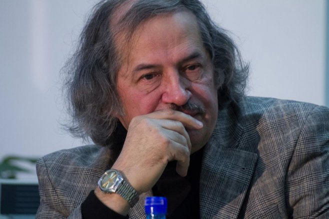
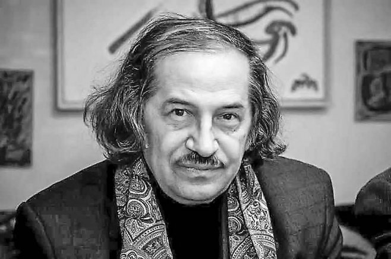
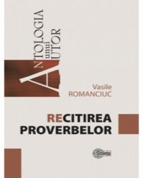
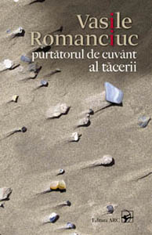
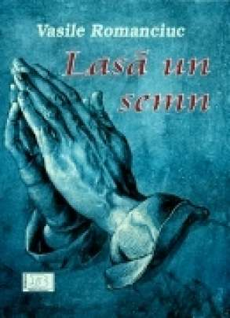

VASILE ROMANCIUC
Date biografice
Publicatii

Vasile Romanciuc s-a nascut la 17 decembrie 1947 in satul Badragii Noi, Edinet (fostul judet Hotin), Basarabia, parintii sai fiind Alexei Romanciuc si Olga Romanciuc. Este absolvent al Facultatii de Filologie, sectia ziaristica a Universitatii de Stat din Moldova (1972). A fost redactor la Radio Moldova, consilier la Uniunea Scriitorilor din Republica Moldova, redactor la editurile „Museum”, „Gh, Asachi”, „Literatura artistica”, „Prut International”.Debut editorial cu placheta Genealogie(1974). Urmeaza volumele de versuri: Citirea proverbelor,Note de provincial, Un timp fara nume, Indoiala de sine, Marele pustiu invizibil, Recitirea proverbelor, Olimpul de plastic, Lasa un semn, Cuvantul ne adauga vedere s.a. A publicat mai multe carti de versuri pentru copii. Vasile Romanciuc este membru al Uniunii Scriitorilor din Republica Moldova (1976), membru al Uniunii Scriitorilor din Romania (1994), membru al PEN-Centrului International (1996).Multe dintre versurile poetului sunt cantate – colaboreaza cu artistul Mihai Ciobanu (a se vedea CD-ul Ruga pentru noi – cantece pe versurile lui Vasile Romanciuc). Intalniri de suflet cu conationalii nostri din diaspora – Atena, Lisabona, Faro, Padova. Premiul pentru poezie al Uniunii Scriitorilor din Republica Moldova (1996), Premiul National al Republicii Moldova (2000), Premiul Nichita Stanescu (2001), Diploma de Onoare a Consiliului International al Cartii pentru Copii si Tineret – IBBY (Basel, Elvetia, 2002), Premiul Otilia Cazimir al Salonului de Carte Romaneasca(Iasi, 2007), Marele Premiu Ion Creanga al Salonului International de Carte pentru Copii(Chisinau, 2010). Distinctii: Medalia "Mihai Eminescu", Ordinul de Onoare al Republicii Moldova, Ordinul Republicii, Ordinul „Meritul Cultural” – in grad de Ofiter, categoria A „Literatura” (Romania).


Opere
- Volume de versuri
- Genealogie
- Citirea proverbelor
- Din tata-n fiu
- Ce am pe suflet
- Note de provincial
- Un timp fara nume
- Indoiala de sine
- Un ochi
- Marele pustiu invizibil
- Olimpul de plastic
- Recitirea proverbelor
- Purtatorul de cuvant al tacerii
- Vesminte de gala pentru marii pitici
- Lasa un semn
- Cuvantul ne adauga vedere
- Lumina glasului launtric
- Panea noastra cea din toate filele
- Carti pentru copii
- Daca ai un prieten
- Mama coase-o floricea
- Pamantul parintilor, pamantul copiilor
- Doi iezi
- Uriasul cu trei ochi
- Floarea Zburatoare
- Toate intamplarile se prefac in cuvinte
- Copilul cu aripi de carte
- O furnica in biblioteca
- De ce Plange colvnul?
- Am un nume frumos
- Puiul mamei, dragul tatei
- Poezii mici de crescut mari
- Un bostan laudaros
- Versurile sale au fost incluse in antologiile:
- Ecouri poetice din Basarabia
- Dal pensiero ai segni
- Singular destinies
- Arhipelag
- Poeti din Basarabia
- Antologie de poezie romaneasca din Moldova
- Ars poetica